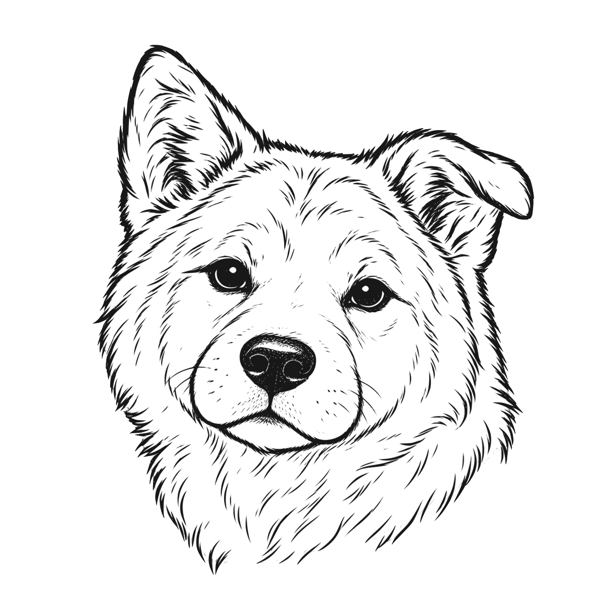

Shoji · Idle status glyph
At the prompt.
A quiet Torii for idle terminals. The existing working arc, done checkmark and needs-you Hachi keep their distinct meanings.
Idle Torii
A static outline in the existing idle tint: #E2E8F0 at 55%. Optical width is about 18 pt inside the 22 pt card status slot. No ring, glow, red accent or animation.
gosta-gosta~/Gosta/gosta-gosta
CODEX2m
✓
!

api-serviceWaiting for permission1All current status sizes
Same vector, full status canvas. Sizes shown in points before display density; every size follows the existing app zoom.
| Location / base size | 75% | 100% | 200% |
|---|---|---|---|
| Shelf card22 pt at 100% | 16.5 pt canvas | 22 pt canvas | 44 pt canvas |
| Pane header16 pt at 100% | 12 pt canvas | 16 pt canvas | 32 pt canvas |
| Recent switcher18 pt at 100% | 13.5 pt canvas | 18 pt canvas | 36 pt canvas |
Checking sizes…
IdleTorii · calm prompt
WorkingBlue arc · active turn
DoneCheckmark · completed turn
Needs youOrange ! + Hachi · input needed
Ready for native integration. SVG and template PDF are supplied. The app agent still needs to check native optical alignment, labels and all status transitions. Hachi and the Torii-free app icon are unchanged.